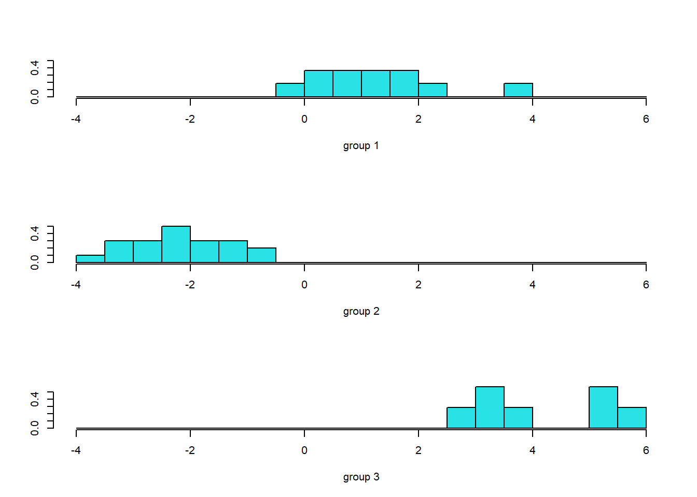
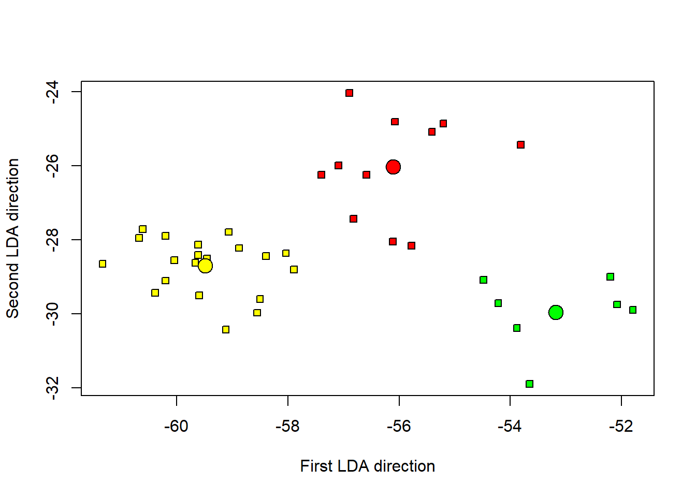
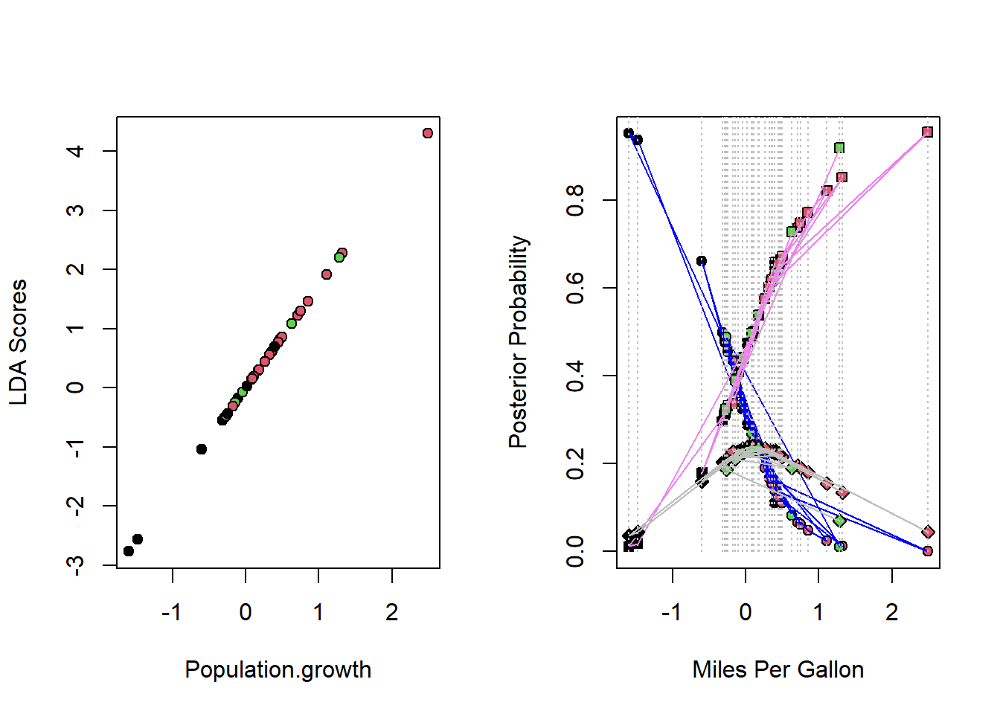
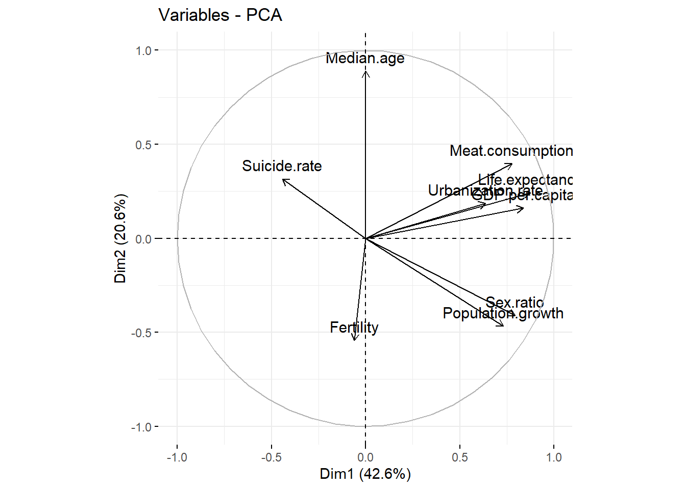

set.seed(123)
data<-read.csv2("C:/Users/guill/OneDrive/Documents/Charles_University/Multivariate analysis/Europe.csv",sep=";",header = TRUE,row.names = 1,dec=",")
library(FactoMineR)## Warning: le package 'FactoMineR' a été compilé avec la version R 4.1.3require(foreign)## Le chargement a nécessité le package : foreignrequire(nnet)## Le chargement a nécessité le package : nnetrequire(ggplot2)## Le chargement a nécessité le package : ggplot2require(reshape2)## Le chargement a nécessité le package : reshape2## Warning: le package 'reshape2' a été compilé avec la version R 4.1.3Create 3 groups
data_scale <- scale(data)
resKmeans <- kmeans(data_scale, 3, nstart = 50)
data$class<-resKmeans$clusterlibrary(MASS)
lda1 <- lda(class ~ ., data = data)
lda1cv <- lda(class ~ ., data = data,CV=T)
pred <- predict(lda1)
ldahist(data = pred$x[,1], g=data$class)
library("klaR")## Warning: le package 'klaR' a été compilé avec la version R 4.1.3tData <- cbind(as.matrix(data[,1:9]) %*% lda1$scaling, data$class)
m1 <- apply(tData[tData[,3] == 1, 1:2], 2, mean)
m2 <- apply(tData[tData[,3] == 2, 1:2], 2, mean)
m3 <- apply(tData[tData[,3] == 3, 1:2], 2, mean)
plot(tData[,2] ~ tData[,1], pch = 22, bg = c("red", "yellow", "green")[unclass(as.factor(data$class))], xlab = "First LDA direction", ylab = "Second LDA direction")
points(m1[1], m1[2], cex = 2, pch = 21, bg = "red")
points(m2[1], m2[2], cex = 2, pch = 21, bg = "yellow")
points(m3[1], m3[2], cex = 2, pch = 21, bg = "green")
test<-multinom(as.factor(class)~.,data=data)## # weights: 33 (20 variable)
## initial value 41.747267
## iter 10 value 15.495431
## iter 20 value 0.758328
## iter 30 value 0.001463
## final value 0.000062
## convergedz<-summary(test)$coefficients/summary(test)$standard.errors
(1 - pnorm(abs(z), 0, 1)) * 2## (Intercept) Fertility GDP.per.capita Life.expectancy Meat.consumption
## 2 0 0 0.9816486 0.6838418 0.9957911
## 3 0 0 0.9530796 0.0000000 0.0000000
## Median.age Population.growth Sex.ratio Suicide.rate Urbanization.rate
## 2 0 0 0 0 0.9721808
## 3 0 0 0 0 0.0000000lda2 <- lda(class ~Population.growth , data = data)
lda2cv <- lda(class ~Population.growth , data = data,CV = T)lda_scores <- as.numeric(lda2$scaling) * data$Population.growth
par(mfrow = c(1,2))
plot(lda_scores ~ data$Population.growth, pch = 21, bg = data$class, ylab ="LDA Scores", xlab = "Population.growth")
lda2cv <- cbind(lda2cv$posterior, data$Population.growth, data$class)
lda2cv <- lda2cv[order(data$class), ]
plot(lda2cv[,1] ~ lda2cv[,4], pch = 21, bg = lda2cv[,5], ylab = "Posterior Probability", xlab = "Miles Per Gallon")
lines(lda2cv[,1] ~ lda2cv[,4], col = "blue")
points(lda2cv[,2] ~ lda2cv[,4], pch = 22, bg = lda2cv[,5])
lines(lda2cv[,2] ~ lda2cv[,4], col = "violet")
points(lda2cv[,3] ~ lda2cv[,4], pch = 23, bg = lda2cv[,5])
lines(lda2cv[,3] ~ lda2cv[,4], col = "gray")
for (i in 1:nrow(lda2cv)){
lines(rep(lda2cv[i,4], 2), c(0,1), col = "gray", lty = 3)
}
data2<-data
data_scale2 <- scale(data2)
resKmeans2 <- kmeans(data_scale2, 2, nstart = 50)
data2$class<-resKmeans2$clusterlibrary("FactoMineR")
library("factoextra")## Warning: le package 'factoextra' a été compilé avec la version R 4.1.3## Welcome! Want to learn more? See two factoextra-related books at https://goo.gl/ve3WBares<-PCA(data2,quali.sup=10,graph = F)
data3<-data.frame(cbind(res$ind$coord[,1:2],data2$class))
colnames(data3)[3]<-"class"
fviz_pca_var(res, col.var = "black")
da.gr = data.frame(cbind(seq(-3.5,5,len=38),seq(-5,3,len=38)))
names(da.gr) = c("Dim1","Dim2")
par(mfrow=c(2,2))
cols <- c("red", "blue")
mowe.ii = unique(da.gr$Dim1)
mowe.ll = unique(da.gr$Dim2)
d.nn <- glm(factor(class)~Dim.1+Dim.2,family=binomial,data=data3)## Warning: glm.fit: algorithm did not converge## Warning: glm.fit: fitted probabilities numerically 0 or 1 occurredsummary(d.nn)##
## Call:
## glm(formula = factor(class) ~ Dim.1 + Dim.2, family = binomial,
## data = data3)
##
## Deviance Residuals:
## Min 1Q Median 3Q Max
## -2.846e-05 -2.100e-08 -2.100e-08 2.100e-08 3.389e-05
##
## Coefficients:
## Estimate Std. Error z value Pr(>|z|)
## (Intercept) -15.20 33244.67 0.000 1.000
## Dim.1 -52.47 42088.60 -0.001 0.999
## Dim.2 17.05 30967.49 0.001 1.000
##
## (Dispersion parameter for binomial family taken to be 1)
##
## Null deviance: 5.2257e+01 on 37 degrees of freedom
## Residual deviance: 2.5728e-09 on 35 degrees of freedom
## AIC: 6
##
## Number of Fisher Scoring iterations: 25